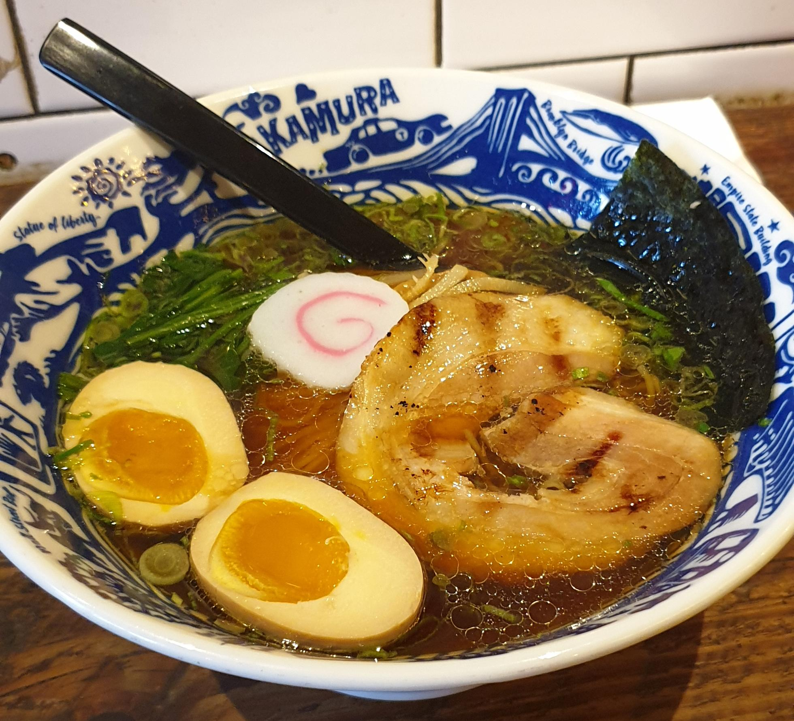
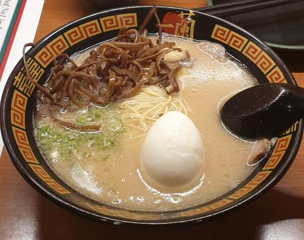
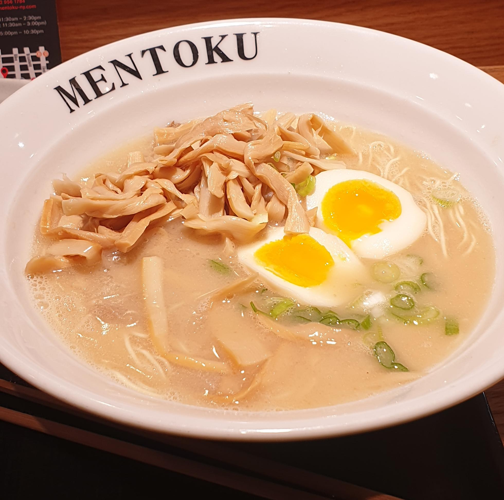

New York Ramen Tour
October 13th, 2019
Introduction
I had the opportunity to spend a week in the great city of New York in september. There were a lot of things I wanted to do, most of them I did.
I especially wanted to enjoy the variety of food the city has to offer, one kind in particular. After tasting the best ramen in Paris, I wanted to
step up my game. That's right, for a week I looked for the finest brothes in the borrows and had some ramen for lunch.
Nakamura

Bowl of Torigara Ramen
Nakamura is the first ramen I tried in New York. It is located in the lower East Village. I arrived early around 12pm. The location is not what I expected. It is next to one of Manhattan's bridges to Brooklyn on a street that does not look like much. I got in.
The inside was empty. I appreciated the simplicity of the venue and the wooden furniture. A friendly waiter came to me and I got seated on a stool
facing a counter in the purest japanese style.
For those who don't know there are 3 main types of ramen brothes. The first is tonkotsu, it is made out of pork carcasses stewed for hours. It is rich,
fat and thick. It comes with slices of chasu, which is fat pork. This is the kind I usually order. The second is Soyu. This means soy, as you might have guessed. It is lighter and slightly salty. It
usually comes with chicken. The last type is Miso. You might have heard of miso soup. Well it is the same thing. This is the kind I experimented the less with. It has a very particular taste.
I ordered the Torigara shoyu ramen. Let's end it with the suspense, it is one of the best ramen I have ever tasted. The broth was light yet tasty, the
chicken was well cooked, and the egg was squishy as I like. Usually I don't eat everything in a ramen bowl, there are always stuff I leave on the side.
For example, I never eat the nori seaweed. Never liked it. In the torigara ramen, there were naruto, spring onions, spinach shoots, and nori. I did not leave a thing aside. The bowl was clean as if it got out of the washing machine when I was done with it. The spinach shoots especially were delicious. I cannot recommend
Nakamura enough after this experience.
Ichiran

Bowl of Ichiran Tonkotsu Ramen
Ichiran is a well-known brand for the ramen lovers, originating from Fukuoka (apparently a foodie paradise, I should go there...). There are two venues in New York that I know of. I went to the one on the East Side, around the Empire State Building.
I think it is quite popular as I had to wait around 20 minutes to be seated. There's also the fact that I went there for diner which is usually a more crowded moment of the day.
I also tried the Ichiran venue in Brooklyn and they both look exactly the same. You first enter a waiting room where you are given a menu and a number. There is a pane on the wall
where you can see which seats are currently occupied and which are vacant along with the seat numbers. Apart from that the room is pretty naked except a counter which is basically a cash desk.
Once your number is called you enter the main room, going through a thin bamboo curtain. The layout there is quite surprising. The whole room center is hidden, this is where the waiters are, and you get to sit
in individual booths on the side. There you are facing another bamboo curtain. You have to fill a paper for what you want to eat. There is quite a lot of choice however Ichiran's specialty is the Tonkotsu ramen
so you'll mostly find this type. Fill the paper and then ring, a waiter will open the curtain and take your order. Japanese efficiency I guess.
This is not an ideal sitting if you are coming with friends, which was my case. There a small walls between the booths so even if you are sitting side by side
you constantly have to move your head to talk to your peeps. But then again, this disposition is quite common in Japan, so you can't complain about authenticity.
The ramen itself is delicious. The noodles are thin, which I prefer and the egg is perfectly well cooked. You can easily order a refill which is not so common so kuddos for that. The broth is good
however I personally prefer it thicker but it is not everyone's taste. Though I have to say I was not as pleasantly surprised as I was at Nakamura. The ramen is good but classic. It is therefore a perfect place to bring
someone who never had ramen. But not a date because, you know, walls.
Mentoku

Bowl of Mentoku Tonkotsu Ramen
I was wandering in Hell's Kitchen around lunch, looking for ramen, as usual. I could almost have passed by Mentoku without noticing it. It is a small venue on a busy road in the heart of Hell's Kitchen.
Also it was completly empty. This is usually a bad sign but to be fair, it was pretty early, I was pretty hungry and it's ramen, so I went in. I sat at the counter, facing the kitchen, this is my favorite spot
in every ramen place.
There is not much to say about Mentoku honestly. I ordered the Tonkotsu classic and it was good. They give extra bamboo shoots which is a plus. The egg was well cooked with extra squishy yolk. Other than that, it was pretty classic, just like Ichiran.
However, the setting is better for socializing. So if you want to bring a date, better go here than Ichiran's.
Minca
That was the last ramen of New York trip. Minca is located in the East Village, not so far from Nakamura, in case you are planning a ramen marathon. I was advised this place by
a friend from Queens after we shared a bowl at Ichiran's brooklyn venue. Minca is a small restaurant on a quiet street in the east of the East Village. I remember it to be cash-only
so take a little detour by the ATM before going there, 30$ should be more than enough. The place itself is quite small and feels authentic. Not an overly clean and unpersonal place,
Minca does not fake it. The kitchen takes a quarter of the space and there is a large counter to sit in front of it, so guess where I sat ? Minca feels like
this kind of laid back place you would go to have a nice bowl of ramen on a Sunday lunch after a night of partying. The staff is really nice, they always have a smile and are helpful.
I took a Tonkotsu ramen (surprising isn't it ?). First, the meat was really nice, probably the best pork I've had in a ramen. They grill it in the kitchen before you with a blowtorch.
The egg is marinated which is a plus but a little over cooked, the yolk was almost hard. It was however a very good ramen and the most authentic place with Nakamura.
I did not eat the nori seaweed though.